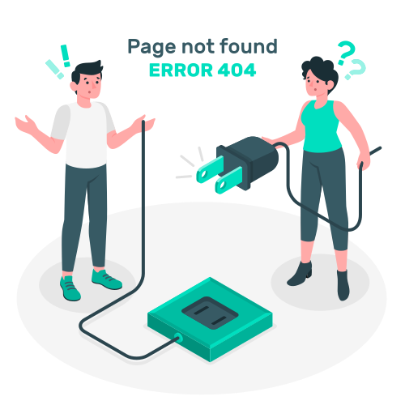

<ion-content>
  <div class="img-no-data-available">
    
  </div>
  <div class="btn-container">
    <ion-button color="darkgreen" (click)="goHome()">
      <ion-icon name="home"></ion-icon>Kembali Halaman Depan
    </ion-button>
  </div>
</ion-content>